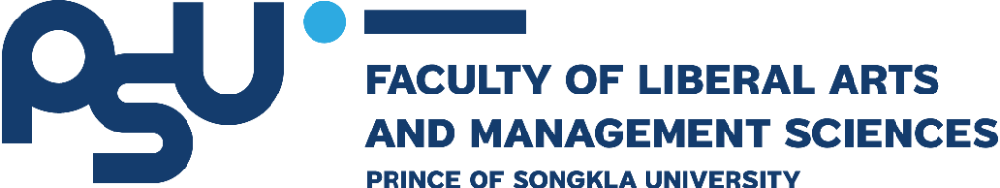

ศูนย์รวมบริการดิจิทัลสำหรับนักศึกษา คณาจารย์ และบุคลากร
หากเปิดจาก LINE หรือ Facebook ให้กดเมนูมุมขวาบนแล้วเลือก “เปิดในเบราว์เซอร์” เพื่อการใช้งานที่สมบูรณ์
ระบบศูนย์รวมบริการเอกสาร
ยื่นและติดตามคำร้องเอกสารออนไลน์ได้ในที่เดียว
ระบบสร้างโปสเตอร์แสดงความยินดี
สร้างโปสเตอร์แสดงความยินดีสำหรับผลงานและรางวัล